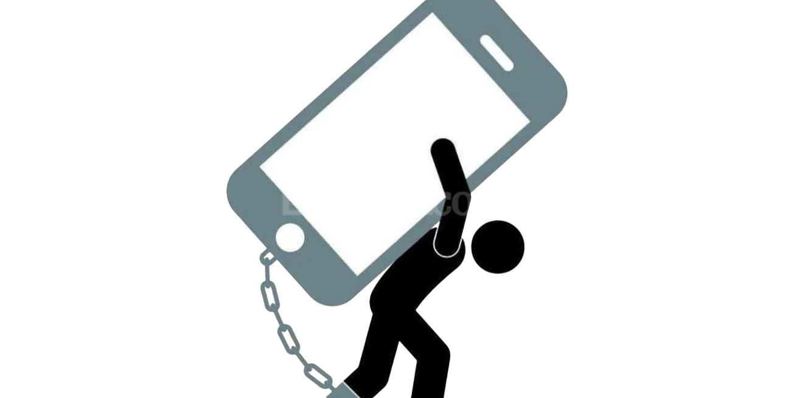
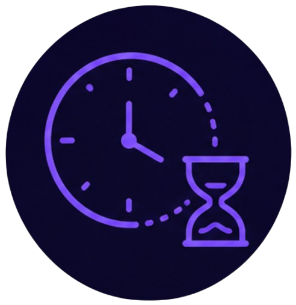
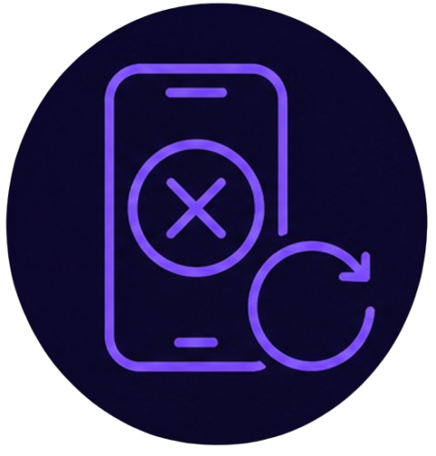
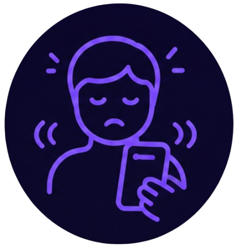
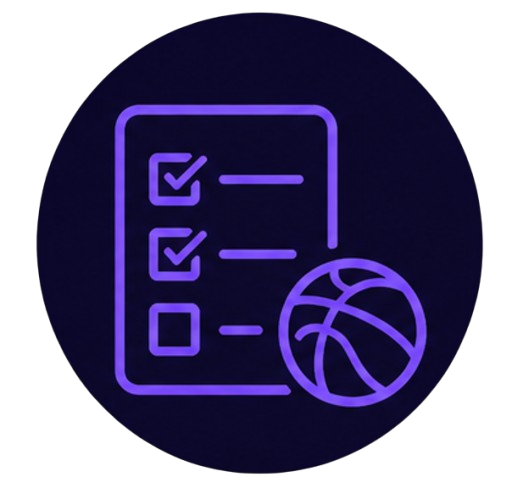

Adicción digital
Las redes sociales están diseñadas para mantenerte el mayor tiempo posible dentro de la app: scroll infinito, notificaciones constantes y recompensas impredecibles activan los mismos mecanismos cerebrales que otras conductas adictivas. Esto no significa que uses mal fuerza de voluntad, sino que la app está hecha para ser difícil de soltar.

Tip del día
Usa el control de tiempo de pantalla de tu celular. La mayoría de teléfonos ya trae una función que muestra cuánto tiempo pasas en cada app y te permite poner límites diarios. Revisa ese dato al menos una vez: muchas veces sorprende ver el número real.

Perder la noción del tiempo
Entras "solo un momento" a la app y sin darte cuenta pasó mucho más tiempo del que planeabas.
Dale la vueltaQué hacer
Configura un límite de tiempo diario por app en la configuración de tu celular. Cuando se cumpla, respeta el aviso en vez de ignorarlo.

Intentos fallidos de reducir el uso
Has intentado usar menos el celular, pero terminas volviendo a los mismos hábitos.
Dale la vueltaQué hacer
En vez de intentar dejarlo de golpe, reduce el uso poco a poco: 15 minutos menos cada semana es más sostenible que cortar todo de un día para otro.

Inquietud sin el celular
Sientes ansiedad o la necesidad urgente de revisar el celular cuando pasas un rato sin él.
Dale la vueltaQué hacer
Practica dejar el celular en otro cuarto durante actividades cortas, como comer o hacer ejercicio, para acostumbrarte poco a poco a estar sin él.

Descuidar otras actividades
Dejas de lado tareas, ejercicio o tiempo con otras personas porque prefieres seguir en la app.
Dale la vueltaQué hacer
Programa tus actividades importantes primero en el día, antes de abrir redes sociales, para que no terminen ocupando el tiempo que tenías planeado para otras cosas.